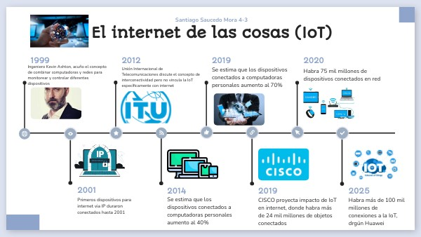

Historia y evolución del internet en las cosas.
Origen
El concepto de Internet de las Cosas tiene sus raíces en la evolución de la tecnología digital y la conectividad. Aunque se trata de un término relativamente reciente, la idea de conectar objetos físicos a una red para que puedan comunicarse entre sí se remonta a varias décadas atrás.
Uno de los antecedentes más importantes fue el desarrollo de la tecnología RFID (Identificación por Radiofrecuencia) en la década de 1980. Esta tecnología permitió a los objetos ser identificados y rastreados sin contacto directo, lo que abrió la puerta a la idea de que los objetos pudieran "hablar" o transmitir información. Sin embargo, fue en 1999 cuando Kevin Ashton, un investigador británico, utilizó por primera vez el término "Internet of Things" mientras trabajaba en el Massachusetts Institute of Technology (MIT). Ashton propuso que los objetos físicos pudieran estar conectados a Internet mediante sensores y sistemas de identificación, permitiendo así una interacción directa con el mundo digital.
Desde ese momento, el concepto comenzó a tomar forma, impulsado por el desarrollo de tecnologías clave como los microcontroladores, las redes inalámbricas, y la miniaturización de sensores. A medida que Internet se volvió más accesible y los dispositivos electrónicos más económicos, se creó el entorno perfecto para que el comenzara a expandirse.
Desarrollo
En la primera etapa de su desarrollo, el se centró principalmente en aplicaciones industriales y logísticas, donde se utilizaban etiquetas RFID y sensores simples para monitorear el estado de productos, máquinas y cadenas de suministro. Con el avance de Internet, la mejora en las redes inalámbricas y la reducción del costo de los componentes electrónicos, fue posible expandirse hacia nuevos sectores, incluyendo el hogar, la salud, el transporte y la agricultura.
En la última década, la aparición de tecnologías como el 5G, la inteligencia artificial (IA), el aprendizaje automático y el almacenamiento en la nube han acelerado exponencialmente el crecimiento del internet en las cosas. Ahora no solo se trata de recolectar datos, sino también de analizarlos en tiempo real para tomar decisiones automáticas o predecir comportamientos. Esto ha dado lugar a desarrollos como las ciudades inteligentes, los vehículos autónomos, los sistemas de monitoreo de salud remotos y las fábricas conectadas bajo el modelo de Industria 4.0.

Actualmente
Una de las innovaciones más destacadas es la inteligencia artificial (IA). Esta permite a los dispositivos no solo transmitir datos, sino también aprender de ellos y tomar decisiones autónomas. Por ejemplo, en el ámbito de la salud, los dispositivos portátiles como relojes inteligentes pueden monitorizar constantes vitales y detectar irregularidades sin intervención humana. En el sector industrial, los sensores inteligentes pueden anticipar fallos en maquinaria y activar sistemas de mantenimiento preventivo.
Otra innovación importante es el uso del 5G, que mejora significativamente la velocidad de las redes. Esto permite una mayor cantidad de dispositivos conectados con menor latencia, algo esencial para aplicaciones críticas como los vehículos autónomos, la telemedicina o la gestión del tráfico en ciudades inteligentes.
Además, el desarrollo de sensores más pequeños, eficientes y económicos ha facilitado la masificación del internet de las cosas. Hoy en día, es común ver dispositivos conectados en el hogar, como luces, electrodomésticos, cerraduras o asistentes virtuales, todos trabajando de manera coordinada para mejorar la comodidad, seguridad y eficiencia energética.
En el contexto de las ciudades inteligentes, se está utilizando para optimizar servicios públicos como la iluminación, la recogida de residuos, el transporte o el consumo de agua y energía. Esto contribuye no solo a la eficiencia urbana, sino también a la sostenibilidad ambiental.